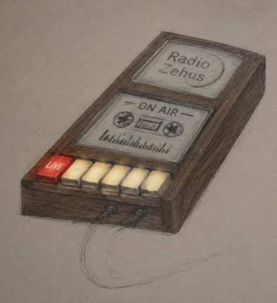
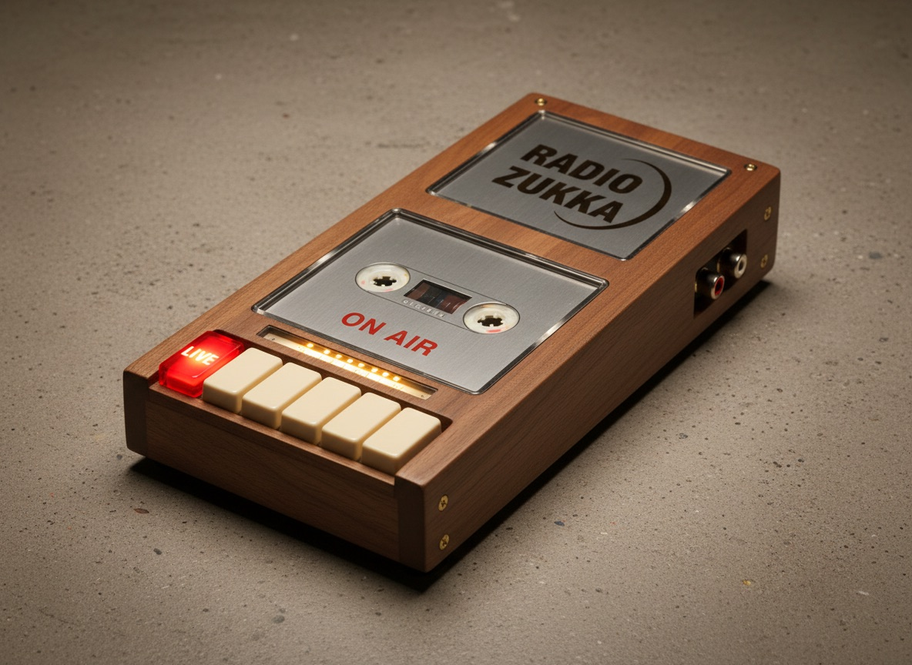

Ein Knopf, zwei Zustände
LIVE senden oder stoppen. Mehr Bedienung gibt es nicht — der Rest passiert im Hintergrund.
Raspberry Pi · Icecast Source · AzuraCast
Das Castcorder nimmt den Master-Out deines Mischpults, encodiert ihn zu MP3 192 kbps und schickt ihn als deine DJ-Identity auf radio.zukkafabrik.de. Nochmal drücken → zurück zum AutoDJ.
Kein Laptop, kein Mixxx, kein Browser-Tab: Das Castcorder ist ein eigenständiger Icecast-Source-Encoder für AzuraCast. Es verbindet sich direkt mit Liquidsoap auf dem DJ-Port deines Streamer-Accounts.
LIVE senden oder stoppen. Mehr Bedienung gibt es nicht — der Rest passiert im Hintergrund.
Das Castcorder meldet sich mit dem konfigurierten Streamer-Account an — nicht mit dem Admin-Account.
Der Eingangspegel läuft in Echtzeit über sieben Segmente. Bei 0 dBFS leuchtet die ganze Leiter: Clipping.
Nur in /etc/castcorder/streamer.env (0600, root).
Nicht in der TOML, nicht im Repo, nicht in ps.
Verbindungsfehler werden mit Delay automatisch neu versucht. Ein zweiter Druck bricht den Retry ab.
AzuraCast sieht einen normalen Live-DJ und feuert
live_connect/live_disconnect.
Telegram, Recording und Uploads laufen wie bei BUTT oder
Mixxx.
Die sieben Segmente sind Statusanzeige und VU-Leiter gleichzeitig. Drück den LIVE-Knopf oder spring direkt in einen Zustand:
Alles aus — die LIVE-Taste glimmt nur schwach.
Zustandsreferenz
| Zustand | VU-Leiter | LIVE-Taste |
|---|---|---|
idle |
aus | glimmt schwach |
connecting |
läuft 1 → 7 durch | blinkt |
live |
Eingangspegel als Leiter 0–7, alle 7 bei Clipping | an |
retrying |
alle blinken langsam | aus |
error |
alle blinken schnell | aus |
ffmpeg liest den ALSA-Eingang und schreibt MP3 nach stdout. Das
Castcorder sendet selbst
SOURCE <mount> HTTP/1.0 mit Basic Auth an
AzuraCast/Liquidsoap — erst nach den ersten echten MP3-Daten wird
die Quelle angemeldet und LIVE angezeigt.
ffmpegs eingebauter icecast://-Client lehnt den
bei AzuraCast üblichen Mountpoint / ab. Das
Castcorder übernimmt den Icecast-Handshake deshalb selbst.
Die Quelle wird erst angemeldet, wenn wirklich MP3-Daten fließen. Ein falsch konfiguriertes Eingabegerät löst also keinen Live-Event aus.
Die Testsuite braucht weder Pi noch ALSA noch Netzwerk:
Icecast-Protokoll gegen einen Fake-Server,
astats-Parser, Encoder-Lebenszyklus und die
komplette Zustandsmaschine.
Der Pi hat keinen Line-In — die 3,5-mm-Buchse ist nur ein Ausgang. Nötig ist ein USB-Audio-Interface mit Stereo-Line-In (Plug-and-Play) oder ein ADC-HAT mit Linux-Support. Pegel-, ADC- und Bohrbild-Details stehen in der Hardware-Doku.
Stückliste
| Teil | Empfehlung |
|---|---|
| Pi | Raspberry Pi 4/5 — Zero 2 W geht, ist aber knapp für USB + Encoding |
| Audio-Eingang | USB-Interface mit Stereo-Line-In (z. B. Behringer UCA202/222) oder ADC-HAT |
| Knopf | 16-mm-Taster „LIVE“, momentary, beleuchtet (3,3-V-LED) |
| VU-Leiter | 7 × 5-mm-LED warmweiß/amber + 220–330 Ω |
| Strom | offizielles 5-V-Netzteil (Pi 4: 3 A, Pi 5: 5 A, Zero 2 W: 2,5 A) |
| Gehäuse | Tapedeck ~220 × 140 × 60 mm mit Cassettenfenster, VU-Leiter und LIVE-Taster |
Pinbelegung (BCM)
| Funktion | BCM | Pin |
|---|---|---|
| LIVE-Taster | GPIO17 |
11 |
| Taster-LED | GPIO27 |
13 |
| VU 1 (links) | GPIO5 |
29 |
| VU 2 | GPIO6 |
31 |
| VU 3 | GPIO16 |
36 |
| VU 4 | GPIO22 |
15 |
| VU 5 | GPIO23 |
16 |
| VU 6 | GPIO24 |
18 |
| VU 7 (rechts) | GPIO25 |
22 |
GPIO18–21 bleiben für I2S/ADC-HAT frei. Alle LEDs über Vorwiderstand nach GND.
Voraussetzungen: Raspberry Pi OS Lite (Bookworm oder neuer), Netzwerk, eingestecktes Audio-Interface und ein aktiver DJ-Account in AzuraCast.
Das Skript installiert ffmpeg,
alsa-utils, gpiozero und
lgpio, legt den Benutzer
castcorder an und aktiviert den
systemd-Service.
git clone https://github.com/momokli/castcorder.git
cd castcorder
sudo ./deploy/install.shServer, Port, Mount und DJ-Username stehen in AzuraCast unter Streamers/DJs → Connection Information → Icecast Clients.
sudo nano /etc/castcorder/config.toml
sudo nano /etc/castcorder/streamer.env
Der Check zeigt Konfiguration, Board, ffmpeg-Version,
Capture-Geräte, Passwort-Status und ob
gpiozero vorhanden ist.
sudo bash -c 'set -a; . /etc/castcorder/streamer.env; set +a; \
cd /opt/castcorder; \
exec /usr/bin/python3 -m castcorder \
--config /etc/castcorder/config.toml --check'Der Encoder startet erst beim Knopfdruck. Im Journal siehst du Verbindungsaufbau, Retries und Fehler im Klartext.
sudo systemctl restart castcorder
journalctl -u castcorder -fGerät finden und Pegel messen. Bei laufender Musik sollte der Peak etwa zwischen −20 und −6 dBFS liegen.
arecord -l
ffmpeg -hide_banner -f alsa -i plughw:CARD=Device,DEV=0 \
-t 5 -af astats -f null -Auf dem Pi kannst du die Software ohne GPIO starten — Enter simuliert dann den LIVE-Knopf.
sudo bash -c 'set -a; . /etc/castcorder/streamer.env; set +a; \
cd /opt/castcorder; \
exec /usr/bin/python3 -m castcorder \
--config /etc/castcorder/config.toml --no-gpio'Alle Schlüssel für Eingang, Stream, Encoder, LEDs, GPIO und Retry-Verhalten — strikt validiert, mit klaren Fehlermeldungen statt stiller Defaults.
Ein liegendes Tapedeck für den Tisch: flaches Holzgehäuse mit Cassettenfenster, siebensegmentiger VU-Leiter und einem roten LIVE-Taster. Die Handskizze zeigt die Aufteilung — Cassettenfenster oben, VU-Leiter darunter, LIVE links, „ON AIR“ rechts.
Der Pi sitzt hinter der Frontplatte, das USB-Audio-Interface findet im flachen Gehäuse Platz. Line-In und Strom gehen hinten raus, damit das Deck auf dem Tisch liegen bleibt.


Castcorder-Konzepte
Acht Renderings für das Tapedeck: Nussbaum, Birke, schwarzes Finish und 3D-Druck, jeweils mit Cassettenfenster, VU-Leiter und LIVE-Taster. Die letzten drei zeigen die E-Ink-Kassette als Hauptmotiv.